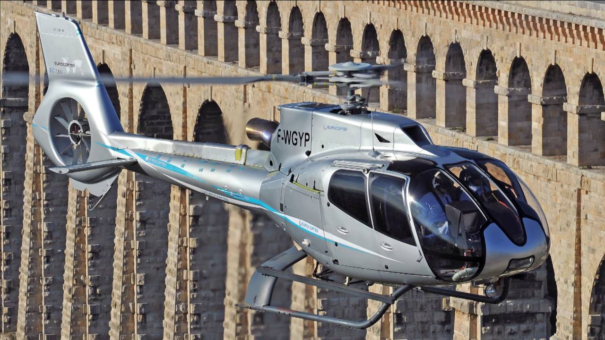

Eurocopter EC130 T2
O Eurocopter EC130 T2 é capaz de levar um piloto e mais sete passageiros, e chega a 287 km/h. É uma versão atualizada do consagrado EC 130. Visualmente, mantém as principais características do antecessor, mas de acordo com a fabricante cerca de 70% dos componentes do helicóptero receberam melhorias.